VITURE¶
VITURE is a leading brand in the AR glasses market, offering a unique gaming experience. This guide is designed to help you set up your VITURE Gen 1 Glasses with SuperDepth3D, depending on your GPU.
VITURE is one of the key players in the AR glasses industry.¶
Setting Up VITURE with Intel GPU¶
To use your VITURE AR Glasses with an Intel GPU, follow these steps:
Initial Steps¶
Update your Arc Drivers: Ensure you have the latest Arc Drivers installed.
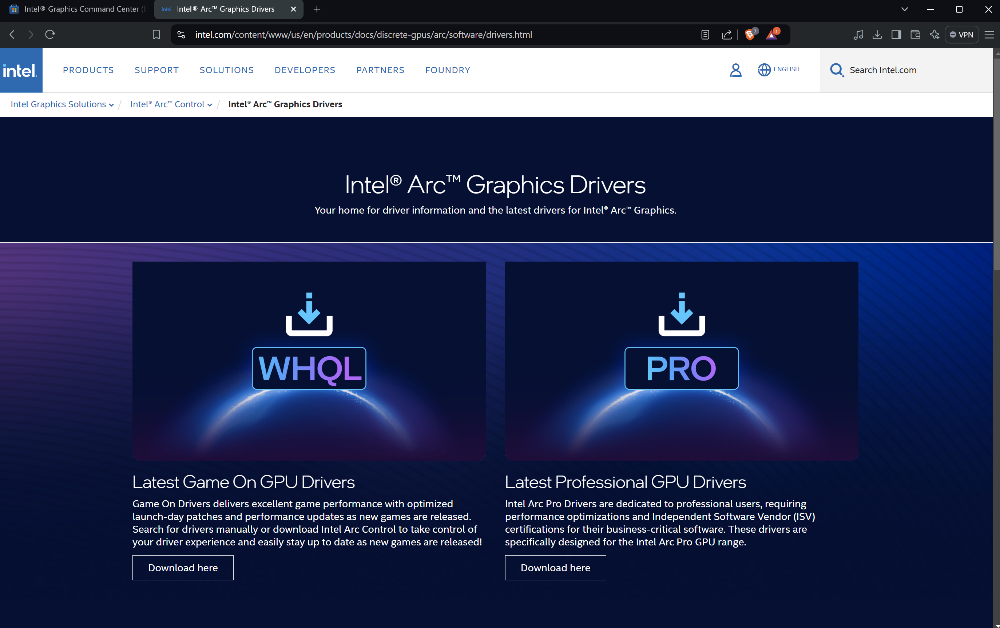
Screenshot of the Intel Arc Drivers page.¶
Download Intel Graphics Command Center: Install the Intel Graphics Command Center beta application.
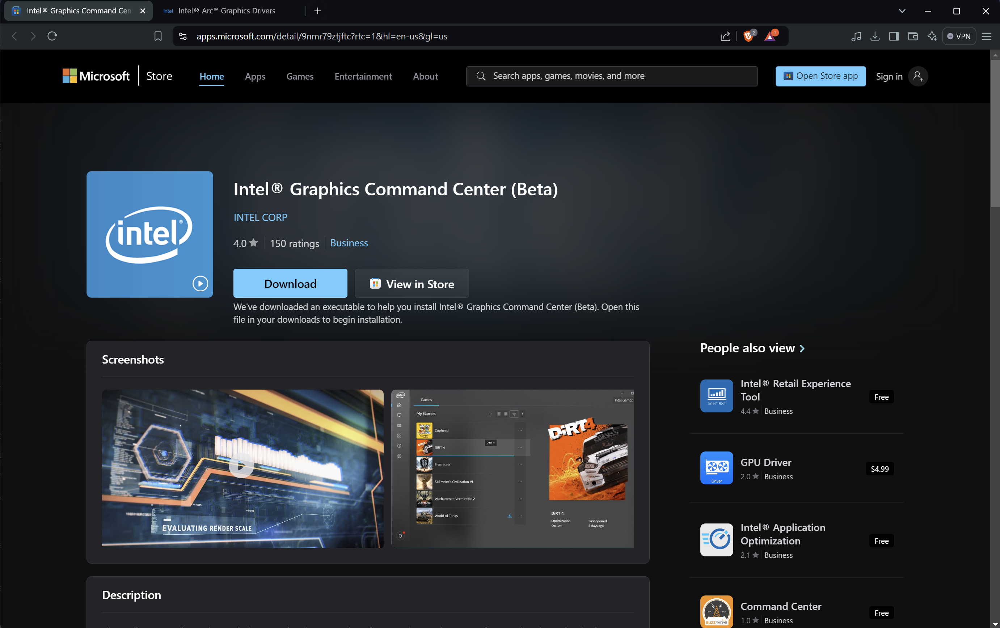
Screenshot of the Intel Graphics Command Center app page.¶
Configuring VITURE with Intel GPU¶
Switch to 3D Mode: Plug in your VITURE AR Glasses and switch them to 3D Mode by holding down the first button for a few seconds.
Under Windows, it should be recognized as a 3840 x 1080p screen:
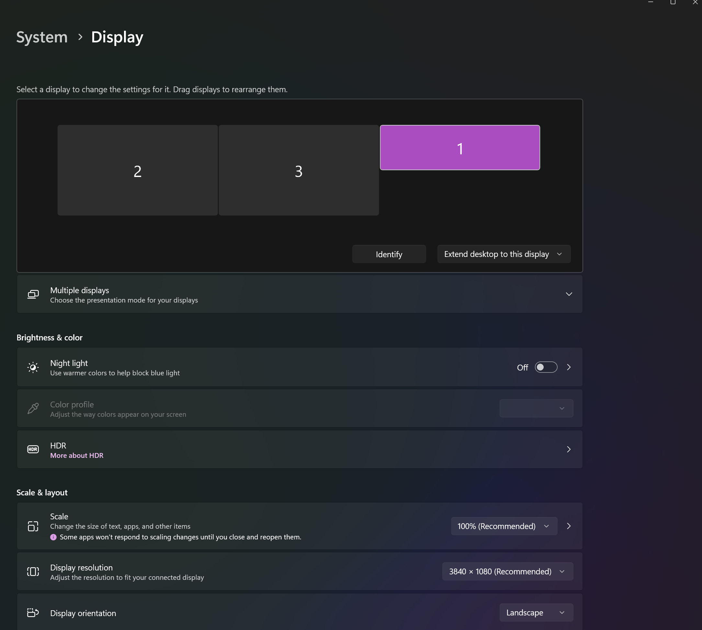
Screenshot of Windows display settings showing the VITURE screen.¶
If you see this, it’s a good sign.
Launch Intel Graphics Command Center: Start the Intel Graphics Command Center (BETA).
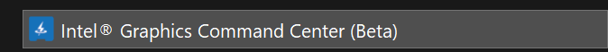
Screenshot of the Intel Graphics Command Center application.¶
Select Display Settings: Click on Display.
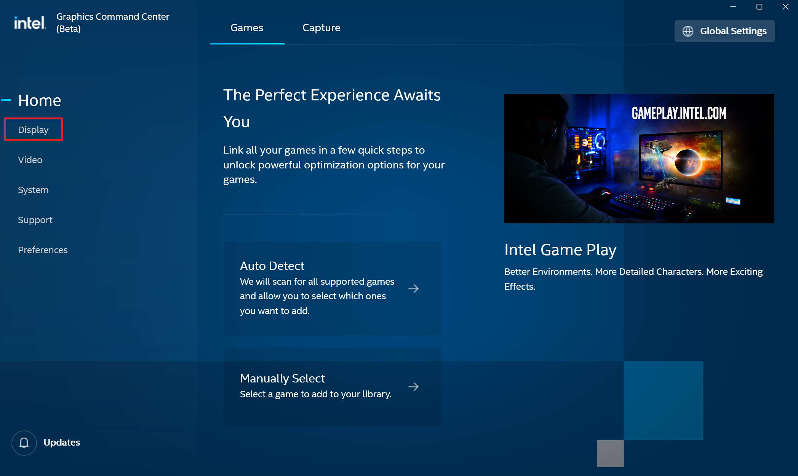
Screenshot showing the Display option in Intel Graphics Command Center.¶
Select VITURE Screen: Click on the VITURE screen.
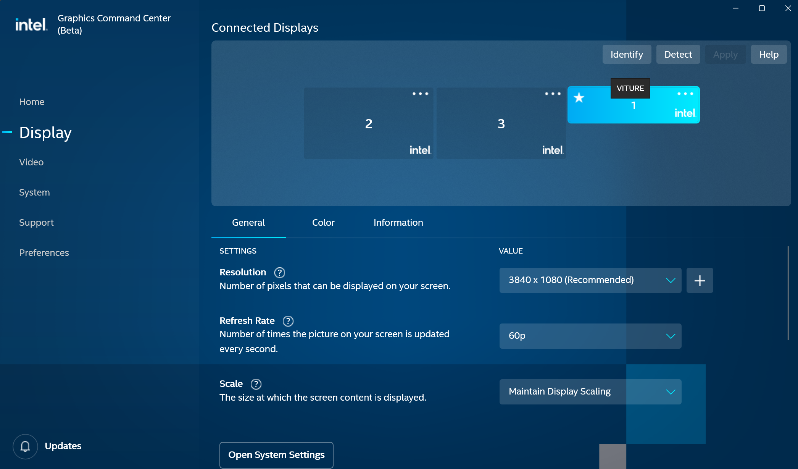
Screenshot showing the VITURE screen selected.¶
Change Resolution: Go to settings and change the resolution from 3840 x 1080 to 1920 x 1080.
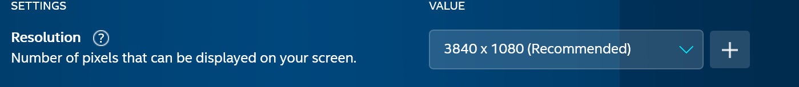
Screenshot showing the resolution settings.¶
Screenshot showing the resolution changed.¶
Set Scale Size: Change the scale size to Stretched.
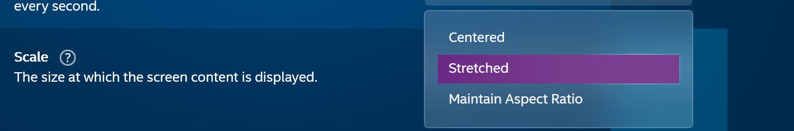
Screenshot of the scale size options.¶
Verify Settings: Your settings should now look like this:
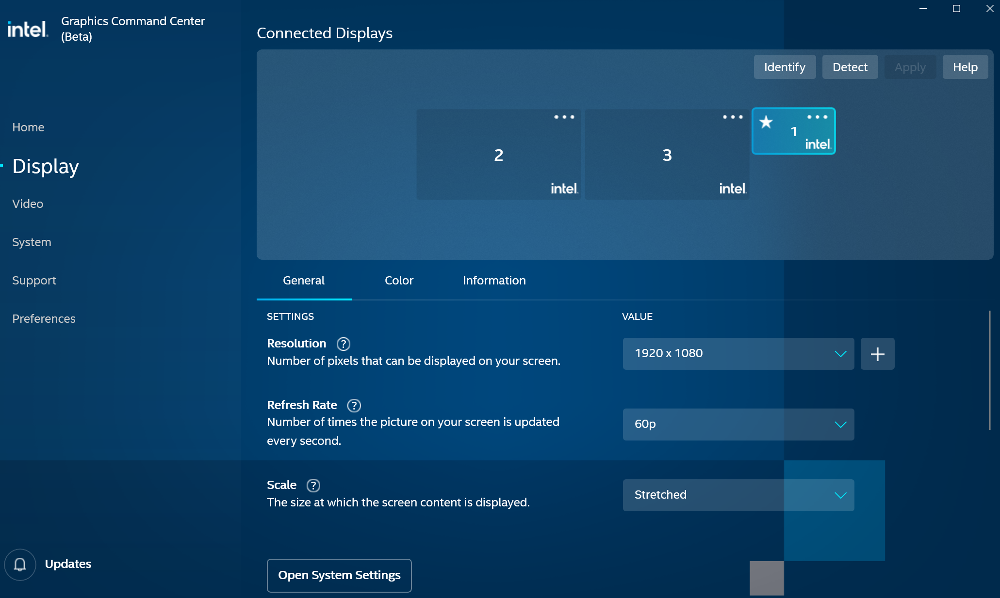
Screenshot of the final display settings.¶
Now you can start your game with SuperDepth3D and enjoy it in stereo 3D.
Setting Up VITURE with NVIDIA GPU¶
To use your VITURE AR Glasses with an NVIDIA GPU, follow these steps:
Update your NVIDIA Drivers: Ensure you have the latest NVIDIA Drivers installed.
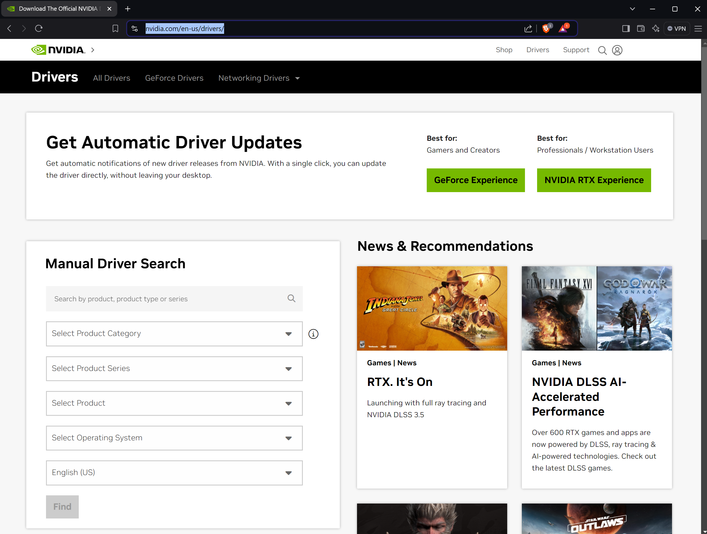
Screenshot of the NVIDIA drivers page.¶
Switch to 3D Mode: Plug in your VITURE AR Glasses and switch them to 3D Mode by holding down the first button for a few seconds.
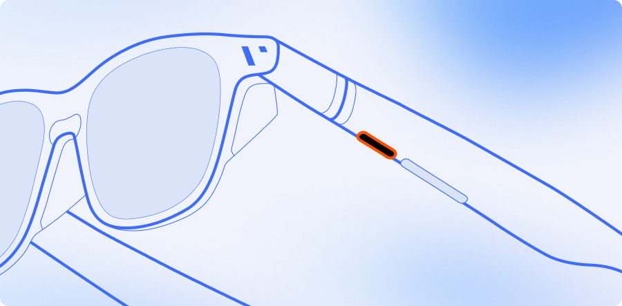
Image of VITURE glasses showing the button location.¶
Under Windows, it should be recognized as a 3840 x 1080p screen:

Screenshot of Windows display settings showing the VITURE screen.¶
If you see this, it’s a good sign.
Launch NVIDIA Control Panel: Start the NVIDIA Control Panel.
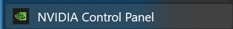
Screenshot of the NVIDIA Control Panel.¶
Change Resolution: Click on Change Resolution and set it to 1920 x 1080.
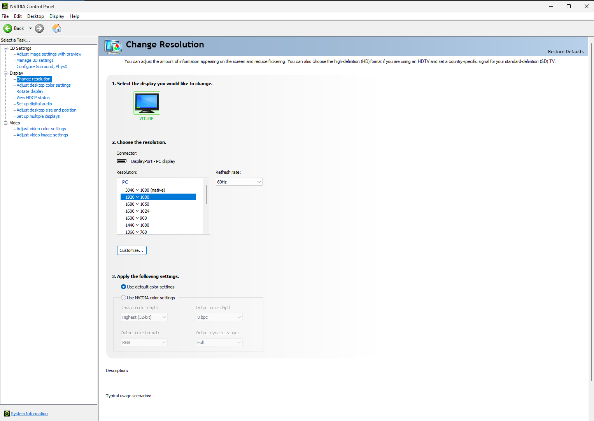
Screenshot of the NVIDIA resolution settings.¶
Adjust Desktop Size and Position: Go to Adjust Desktop size and Position, set it to Fullscreen, and the rest should default to the correct values.
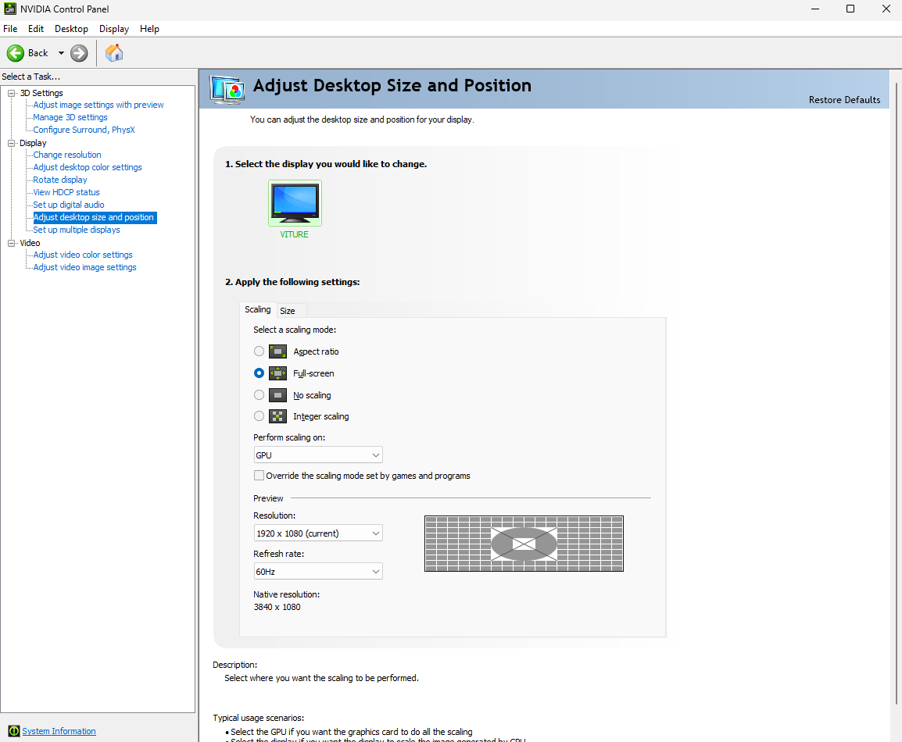
Screenshot of the NVIDIA desktop size and position settings.¶
Now you can start your game with SuperDepth3D and enjoy it in stereo 3D.